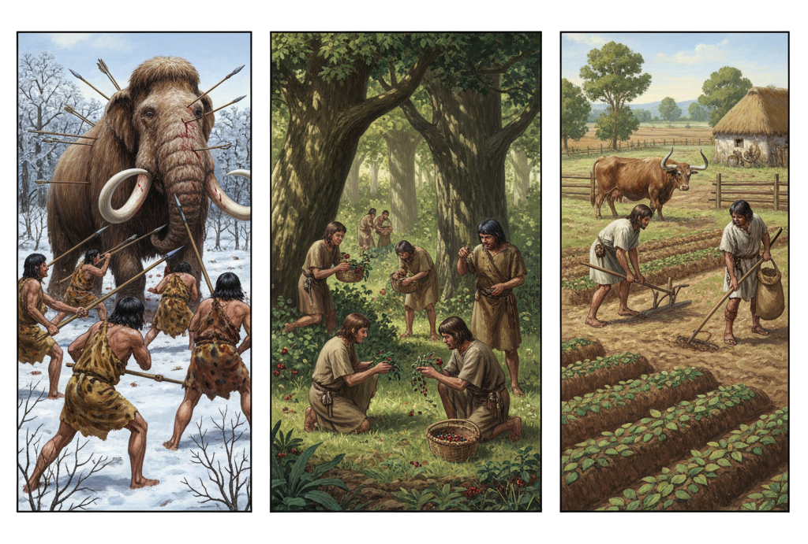

Die menschliche Entwicklungsgeschichte hängt direkt mit der Entwicklungsgeschichte unserer Nutzpflanzen
zusammen.
Aufgabe: Schau dir die nachfolgenden drei Bilder an. Welche Lebensweisen der Menschen im Hinblick auf die
Beschaffung von Nahrung sind dargestellt?

Bild generiert von Gemini, einer KI von Google.
Jäger
Sammler
Bauern
Vor etwa 12.000 Jahren begannen die Menschen im östlichen Mittelmeergebiet sesshaft
i zu werden.
Sie zogen nicht mehr als Jäger und Sammler
i durch die Lande. Sie lebten an einem Ort und kultivierten
ihre
Nahrungspflanzen und hielten ihre Nutztiere.
Ermöglicht wurde dies durch viele verschiedene Faktoren:
Einerseits wurde das Klima
i nach der Eiszeit immer wärmer, was einen Anbau von Pflanzen ermöglichte.
Andererseits wurden die Gruppen von
Menschen
i, durch die besseren Bedingungen, immer größer. Die zunehmende Gruppengröße erschwerte aber das
Umherziehen.
Im Verlauf der Jahrtausende gab es immer mehr Entwicklungen, welche
einen
sesshaften
Lebensstil unterstützten, z.B. die Arbeitsteilung und Spezialisierung
i der Menschen.
Wichtig war auch die Erkenntnis, Samen zu sammeln und gezielt auszusäen, damit diese an gewünschten Stellen
kultiviert werden konnten.
Dadurch konnten die Menschen in neue Gebiete vordringen und sie für ihre Nutzung erschliessen.
Bis bei uns in Mitteleuropa aktiv Ackerbau und Viehzucht betrieben wurden, vergingen allerdings noch ca. 5.000
Jahre.
Dafür mussten die Menschen zuerst die Wälder roden
i, um Anbauflächen und Wiesen für die Haltung ihrer
Tiere zu schaffen.
Menschen „züchteten“ dann, durch Auslese oder Kreuzung, langsam aus wenig ertragreichen Wildpflanzen
i die
ersten
Vorgänger unserer
heutigen
Nutzpflanzen
i heran.
Doch wie geschah das im Detail?
Aufgabe: Schau dir dazu das nachfolgende kurze Video an!
1) Wann wurden die Menschen sesshaft?
2) Welche Pflanzen hatten eine besondere Bedeutung beim Sesshaftwerden der Menschen?
3) Was wurde möglich, nachdem nicht mehr jeder Mensch bei der Produktion von Nahrungsmitteln helfen
musste?
Mit der erfolgreichen Züchtung von ertragreichen Nutzpflanzen konnte die Menschheit sich massiv vermehren
und
alle Teile der Welt besiedeln. Insofern hängt die menschliche Kulturgeschichte sehr stark mit der
Entwicklung
unserer Nutzpflanzen zusammen. Allerdings wurden dadurch auch viele Ökosysteme verändert und zum Teil
zerstört.